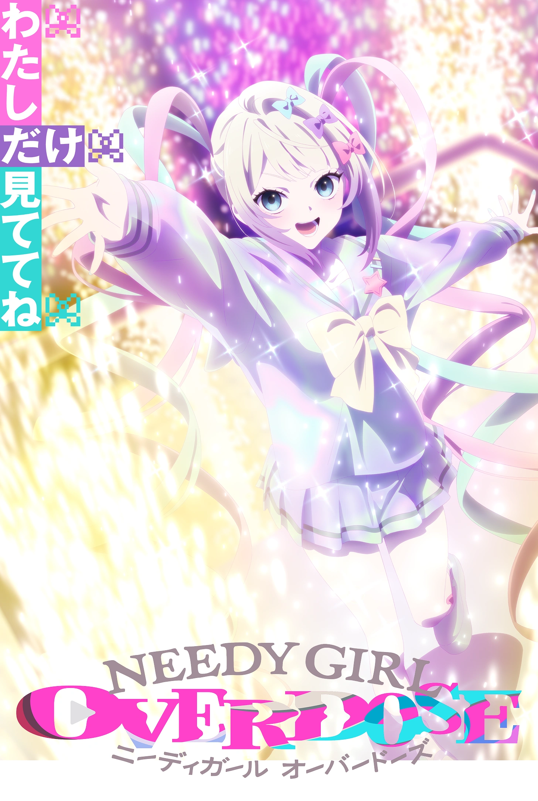

“电波”不是神人剧情的遮幕，放开手脚想写什么就写什么可以不冠超天酱之名，是3个未能成为神、1个犹大和1个普通（存疑）少女的自传。
1星给3集糖糖的封神刻画，倒不如说这才是我看这个番的原因，1星给结尾包怪味寿司，至少就像12集所说的，就算是现象级网红，现实生活中也有普通人不了解你，某种意义上算是总结里所说的，对自己想写什么就写什么的一种妥协？还是神人也要接地气？不过卡茜最后和卖面小哥结婚这点姑且算幸福，这种真心爱着的寿司多多益善。
至于其他的剧情，为了游戏改编剧情（和我一样）基本不用看，约等于开播前评论区的观点“捧新声优和oc”来的。游戏相关的话也就第三集的糖糖个人回，最后13集的结尾有个游戏内全结局达成的回放，以及暗示13集描述的可能也只是结局的一种，不过这样未免有点为自己乱写一通找借口了。甚至很难评价说我最高评价的第三集刚好“没有原作者”参与制作，有点难绷在的。
聊聊主线剧情，卡拉马佐夫把超天酱拉下神坛，老套的主角受到反派（过时的主角）的鼓励，于是励志超越反派的剧情。但是一般情况，要么彻底超越要么彻底杀死，我总觉得这样人气打赢超天酱然后再去三次元救糖糖有点怪，那你11集那快一集的犹大耶稣小剧场是啥，相爱相杀然后歌颂标新立异吗，总觉得有种高不成低不就的感觉。双方的备战（？）流程和小故事还是有点看头的（我认为），但要忍着神人动画以及神人演出来看的话，我是觉得没这必要。如何宣泄情感，用尽各种表现形式又不被当作是无病呻吟其实是相当有看头的，但很可惜至少这番也就看完会说“啊这番神了”的程度（比母鸡卡还强点至少洛丽波这个犹大位是自始至终贯彻的，伏笔啥的也有回收，不像丰川家的黑暗\o/）
评论区
登录GitHub账号后即可留言
未登录只能查看，不能发言
没有GitHub账号？来B站一起聊
在B站讨论